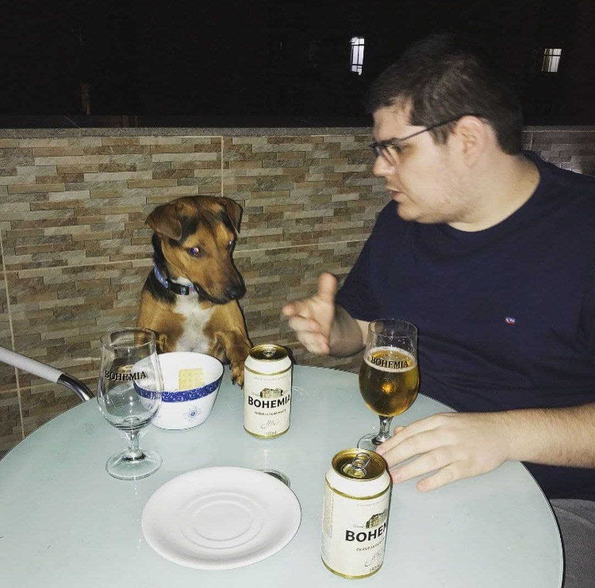

Comumente conhecido como Caze ou Casimito, Casimiro Miguel é, de fato, um mito.
Comumente conhecido como Caze ou Casimito, Casimiro Miguel é, de fato, um mito.
Casimiro Adverte
Não dê cerveja pro seu cachorro (mesmo que ele peça muito). Sério mesmo, não deixe seu cachorro beber.